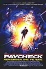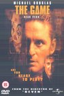
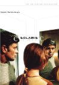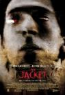


 got in an argument over this movie. My dad wanted to take me to see it, but my mom, more strict at the time, didn't want it to happen. At some point she finally gave in, but then we had to go see it in the cheaper, crappier theater. It was still amazing, of course. And as Bob can attest, at any given time my dad's house on Mountain Oak probably had the DVD of this or Fifth Element playing. It's too bad they never made any sequels to this. <i>None. Never.</i>")
 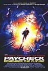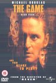
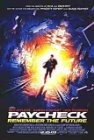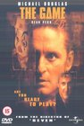


 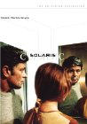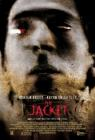
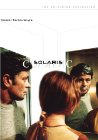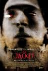